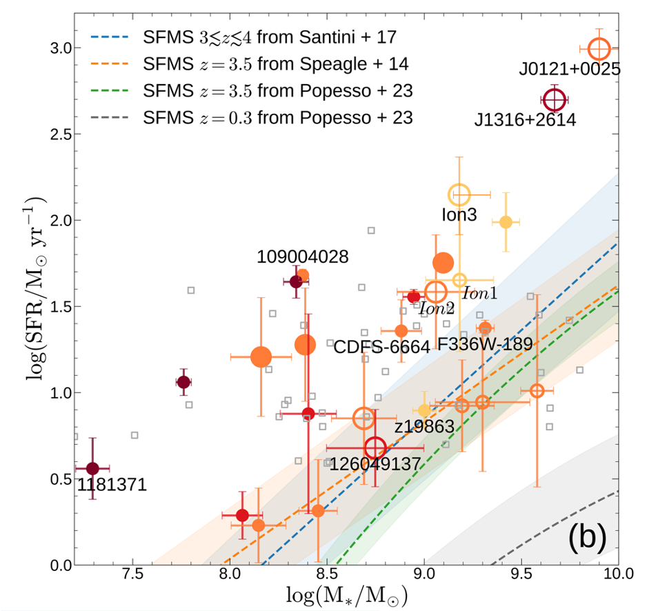
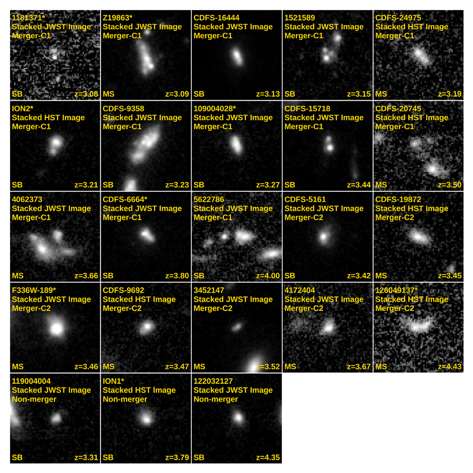

High-redshift LyC Galaxies and LyC Escape
Lyman-continuum emission directly traces escaping ionizing radiation, making LyC galaxies key laboratories for understanding how galaxies contributed to cosmic reionization.
- Physical properties: I study LyC leakers in GOODS-S and test whether LyC escape is connected to starburst activity, mergers, and disturbed morphology (Zhu et al. 2024; Zhu et al. 2025).
- LCE searches: I worked on LCEz4-M1, a z = 4.444 Lyman-continuum emitter candidate reported as the highest-redshift example to date (Zhu et al. 2026a), and contributed to the search for CDFS-6664, a z~3.8 LyC leaker candidate (Yuan et al. 2021).